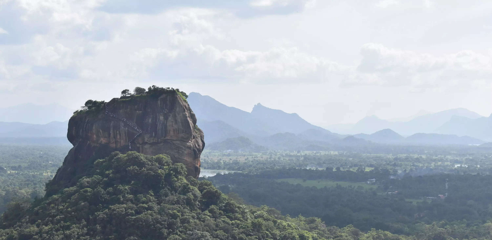

Visit the paradise island!
Why Visit Sri Lanka?
Known as "The pearl of the Indian Ocean", the island nation Sri Lanka has many treasures to be explored. From the high biodiversity, rich heritage, endless beaches and the smiles of its people makes Sri Lanka the perfect tropical island to visit.
One of the islands unique features is that it has many climate zones allowing a traveller to experience and enjoy the wonders of nature in the wet-zone, explore ancient city ruins in the arid zone, surf near Sri Lanka's golden beaches, feel the cold mountains and many more, all in one trip.
Beaches
One of the perks of visiting an island is getting to enjoy the beaches around the landmass.Sri Lanka is gifted with many magnificent beaches. With warm and sunny weather you can get the tropical island experience here in Sri Lanka
Most popular beaches are a very safe place for swimming. Surfing and snorkeling are also popular activities to participate.
Here are some must visit beaches:
- Pasikudai beach
- Nilaweli beach
- Weligama beach
- Koggala beach
- Negombo beach
Rich History
There are many important historic sites in Sri Lanka ranging from the Balangoda caves where prehistoric man lived to 20th century war monuments. In the past the island had many kings who built marvelous creations. You will get to see the ruins of great cities like Anuradhapura and Polonnaruwa and also Sri Lanka's last Kingdoms such as Kotte, Jaffna and Kandy
Sri Lankan historical sites also provides you a glimpse into European architecture after the colonization of the island by the Portuguese, the Dutch and the British. They have built many forts and buildings around the island that are now iconic landmarks.
Diverse Wildlife
The island has many climate regions thus it increases the diversity of the wildlife in the island. You can visit the arid areas to see the thorny bushes then go to Sinharaja to see an entire rain forest! They are just hours apart.
Sri Lanka has many native species that are indeginous to Sri Lanka. Probably there are some unclassified spieces that were never seen before anyone hidding in the forest of Sinharaja and you could be the lucky person to discover a new species here!
Spend time with nature in these protected national parks
- Yala National Park
- Udawalawa National Park
- Wilpattu National Park
- Sinharaja Forest Reserve
- Horton Plains